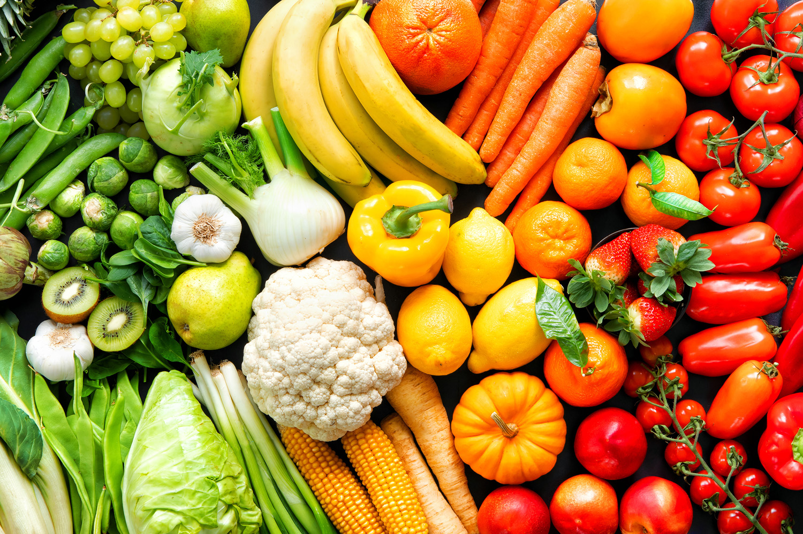
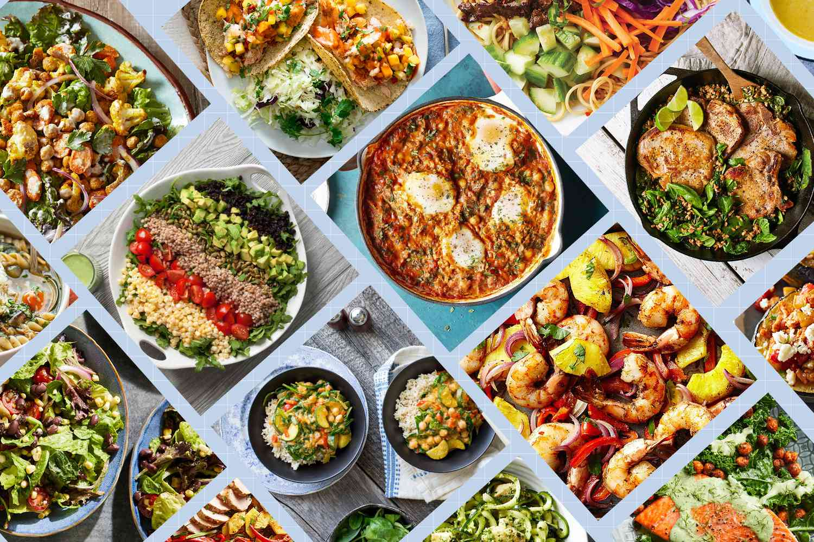
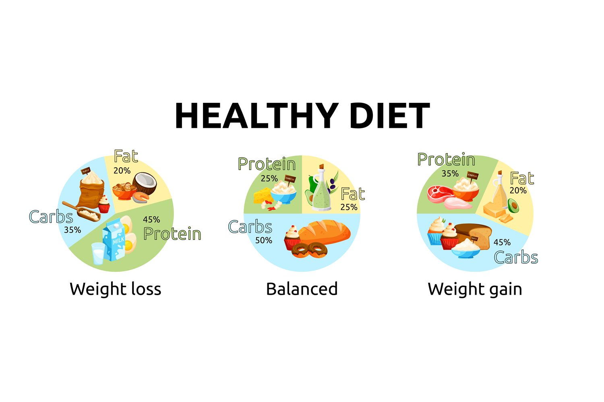

Welcome!
What Is This?
A free personal nutrition calculator. Build a registry of your foods and meals, log what you eat each day, and track your calories and macros over time.
Your daily nutrition log tracks total calories, carbs, protein, and fat. At the end of each day, it gets saved to your history so you can look back on your eating habits. A new day means a fresh log.
Nutrition can feel overwhelming, especially with so much conflicting information out there. The best place to start is simply tracking what you eat. This calculator helps you do that by focusing on the four things that matter most: calories, carbs, protein, and fat.

Calories
Calories measure how much energy a food provides. The most useful concept to understand is your maintenance calories – the amount you can eat each day without gaining or losing weight.
Once you know your maintenance range, everything else follows:
- To lose weight, eat about 500 calories below maintenance.
- To gain weight, eat about 500 calories above maintenance.
Stick with either for four to six weeks and you'll see noticeable results. Calories come from three macronutrients – carbs, protein, and fat – each of which plays a different role.

Macronutrients
Carbs are your body's preferred source of quick energy, which is why they're great before a workout. 1g of carbs = 4 calories. Tracking carbs is especially useful when you're in a calorie deficit and want to make every calorie count.
Protein drives muscle growth and repair. A common guideline is to aim for 1g of protein per pound of bodyweight each day (e.g. 200 lbs = 200g protein). 1g of protein = 4 calories.
Fat provides long-lasting energy and supports vital body functions. Despite the name, dietary fat isn't the enemy – saturated fats should be limited, but unsaturated fats (like those in nuts, fish, and olive oil) are genuinely healthy. 1g of fat = 9 calories.
